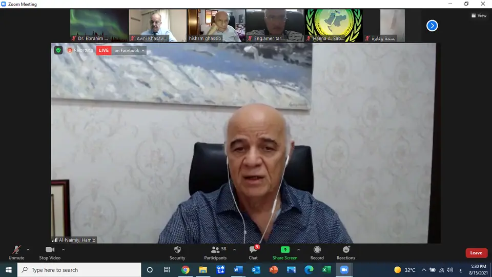
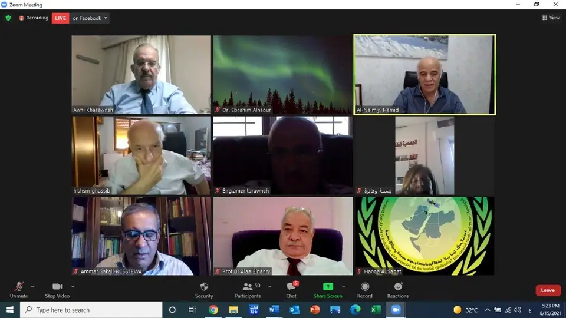

Lectures and events ·
Scientific symposium: "Astronomy and space sciences and sustainable development"
Translated from the Arabic original. اقرأ النص الأصلي بالعربية
Under the patronage of the President of the Arab Union for Astronomy and Space Sciences, Prof. Hamid Majool Al-Naimiy, Chancellor of the University of Sharjah, a scientific symposium entitled "Astronomy and space sciences and sustainable development" was held in the joint virtual space of the Arab Union for Astronomy and Space Sciences and the Regional Centre for Space Science and Technology Education for Western Asia.
The Arab Union for Astronomy and Space Sciences and the Regional Centre for Space Science and Technology Education for Western Asia organised, in their joint virtual space, a scientific symposium entitled "Astronomy and space sciences and sustainable development", with the participation of many Arab scientists, researchers and academics.
At the start of the symposium, Dr. Eng. Awni Khasawneh, Secretary General of the Arab Union for Astronomy and Space Sciences, welcomed the participants and stressed the importance of Arab astronomers taking part and of discussing Arab research and academic capabilities for contributing to sustainable development in the Arab countries. He also pointed to the importance of space technology applications during the pandemic: in the fight against COVID-19, a huge amount of pioneering technology and space application solutions emerged, especially in healthcare and education, drawing on space exploration technologies. This led to a wide range of technologies, including portable ventilators, 3D-printed respirator masks and cheap but effective sterilisation kits, originally designed for use in space.
The symposium's patron, Prof. Hamid Majool Al-Naimiy, praised the organisers and spoke about the main contributions of the astronomy and space sector in the Arab world to sustainable development. He pointed to the many scientific research institutions and space agencies in the Arab world and their great contributions to sustainable development, and to the availability of the potential and capabilities to found one of the strongest space agencies in the world, with scientific and economic benefits for all the Arab countries.
In his speech, Prof. Hisham Ghassib, founding president of Princess Sumaya University for Technology, focused on the cognitive role of astronomy, explaining that the first exact science in history was astronomy, which arose in Babylon (Iraq) through recording and analysing observations, so that astronomy became a model for the other sciences.
Sustainable development is development that meets the needs of present generations and ensures their well-being, including the poor, without compromising the ability of future generations to meet their own needs, taking into account the challenges of preserving ecosystems and the limits of renewable natural resources. It rests on several pillars, such as protecting the environment, meeting basic human needs, achieving social justice and providing broad social solidarity; sustainable development thus covers a range of fields with environmental, economic and social value.
Space technology plays an important role in our daily lives and is of great importance in achieving global development plans, either directly, as an enabler and driving force of sustainable development, or indirectly, by making people's lives easier and meeting their daily needs through access to space-derived data, applications and the infrastructure of systems built on space applications, such as satellite communications, satellite navigation systems, remote sensing, and monitoring the Earth and its atmosphere through satellite meteorology. Space science, technology and applications also contribute enormously to economic growth and to improving the quality of life on Earth.
In the environment, space technology contributes to studying climate change, analysing its causes and addressing them, helping to reduce emissions of harmful gases into the atmosphere, and advancing scientific knowledge of the natural environment, including oceans and seas, water cycles and resources, forests and biodiversity, to support the sustainable management of resources and the protection of ecosystems. Space technology can be relied on at every stage of the disaster management cycle, including prevention, mitigation, preparedness, response, recovery and reconstruction, through data sharing and the provision of communications, aerial imagery and remote sensing. Through space debris monitoring stations, space technology also helps address the hazards posed by near-Earth objects.
Space science, technology and applications are used in health and were put to use during the COVID-19 pandemic, helping countries keep their citizens healthy and their economies on track. With lockdowns imposed around the world, people stayed in touch with one another thanks to space technologies; health services were delivered remotely through e-health platforms, and countless children continued their education through digital learning programmes.
Key space technologies, namely Earth observation, global navigation satellite systems and satellite communications, combined with mobile applications, helped maintain physical distancing rules through software tracking the coronavirus in real time and at scale.
The symposium covered many themes. In the first, Prof. Hisham Ghassib, founding president of Princess Sumaya University for Technology, spoke about the importance of astronomy and space sciences. In the second, on astronomy and space sciences in Jordan: past, present and challenges, Dr. Hanna Sabbat, head of the academic unit at the Regional Centre, spoke. In the third, on astronomy and space sciences in Egypt: past, present and achievements, Prof. Osama Shalabiea of Beni-Suef University and Cairo University spoke. In the fourth, Prof. Alaa Al-Nahry, Vice Chairman of the Regional Centre's Board of Trustees, spoke about international and Arab efforts to explore Mars. Prof. Saleh Al-Shidhani, Vice President of the Arab Union for Astronomy and Space Sciences, spoke in the fifth theme about space technologies and applications supporting sustainable development. Prof. Waheeb Al-Naser, President of the Bahrain Astronomical Society, spoke in the sixth about astronomy and space sciences in Bahrain: past, present and achievements. In the seventh, on astronomy and space sciences in Syria: past, present and achievements, Dr. Mohammad Al-Osairi, Vice President of the Arab Union for Astronomy and Space Sciences and President of the Syrian Astronomical Society, spoke. And Dr. Suttam Al-Shqour of Mutah University spoke about remote sensing and its environmental and agricultural applications.


More posts

Lectures and events
Invitation to the scientific symposium "Astronomy and space sciences and sustainable development"

Lectures and events
Invitation to the scientific symposium "Combating desertification is a social responsibility"
Lectures and events